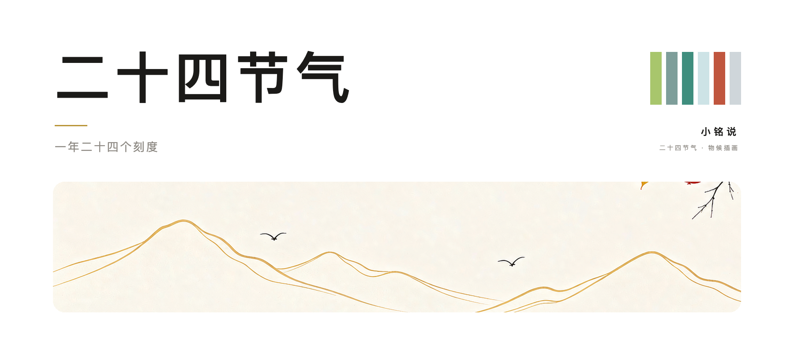
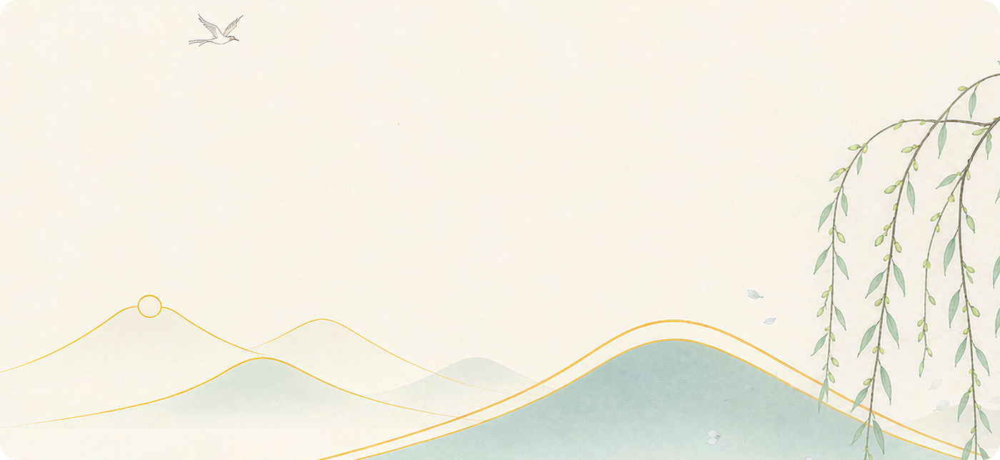
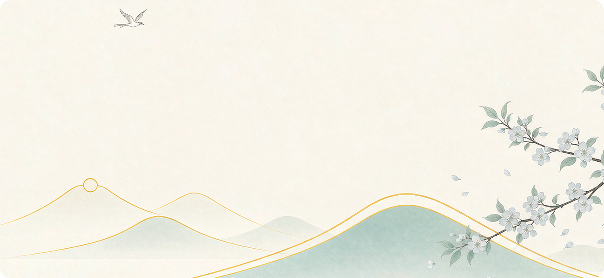
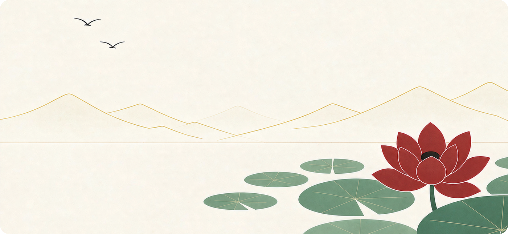
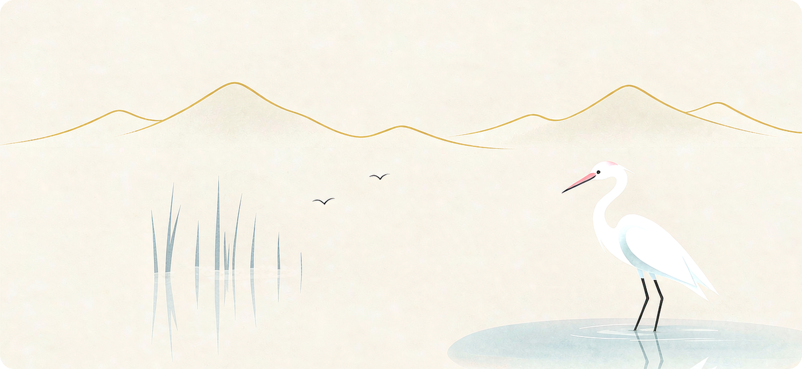
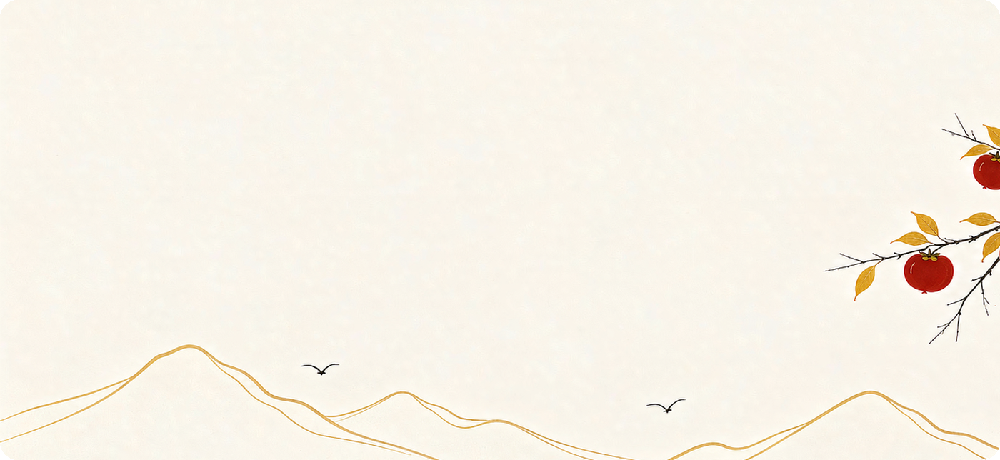
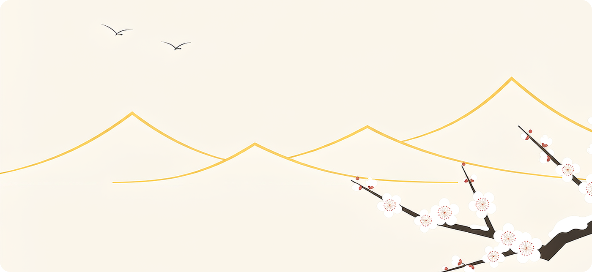
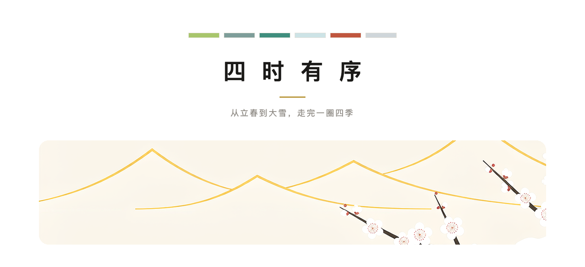

作者 | 小铭
昨天出门早，楼下的草叶上挂了一层水珠。翻了下日历，白露刚过两天。
一年走到这里，其实已经过去了三分之二。
二十四节气这套东西，我们从小背到大，多数人只记得名字，说不上来它到底在讲什么。
它不是玄学。它是中国人在两千多年前做出来的一套时间刻度：把一年切成二十四段，每一段对应太阳在黄道上的一个位置，再配一句物候，告诉你这个时候天地在发生什么。
立春是起点，大雪是终点。中间二十二个刻度，一个不多，一个不少。

01
立春
BEGINNING OF SPRING · 2月4日前后
一候 东风解冻
春到人间草木知
立春在二月四号前后，太阳到达黄经 315 度。
这一天北方还在结冰，但从这天起，白昼开始变长。古书上写「东风解冻」，说的不是当天就化雪，而是从这一天开始，风的方向变了，冰从内部开始松动。
给孩子排计划，最该学的就是这一点：不要把「开始」安排在条件最好的那天。

02
清明
PURE BRIGHTNESS · 4月5日前后
三候 虹始见
沾衣欲湿杏花雨
清明前后气温稳定过十度，雨水变多。
《月令七十二候集解》里写，清明三候是桐始华、田鼠化为鴽、虹始见。彩虹出现在这个时段，是因为冷暖空气开始频繁交手。
放到学习上，这是一年里最适合打地基的一段——天气不冷不热，距离大考又还剩整块时间。

03
夏至
SUMMER SOLSTICE · 6月21日前后
三候 半夏生
映日荷花别样红
夏至是一年里白昼最长的一天，太阳直射北回归线。过了这天，白天开始变短。
古人把它当成一个转折点：阳气到顶，阴气开始生。这一候叫「半夏生」，半夏是一种药草，喜欢阴湿，专挑这时候冒出来。
所以夏至不是一个结束，是一次换挡。

04
白露
WHITE DEW · 9月8日前后
三候 群鸟养羞
秋水共长天一色
白露在九月八号前后。昼夜温差拉大，水汽在草叶上凝成露。
「群鸟养羞」说的是鸟类开始囤积食物，准备过冬。
这是六句物候里最实用的一句：秋天不是收获季，是准备季。开学之后到期末之前这段时间做什么，决定寒假怎么过。

05
霜降
FROST DESCENT · 10月23日前后
三候 蛰虫咸俯
霜叶红于二月花
霜降是秋天最后一个节气，十月二十三号前后。
「蛰虫咸俯」的意思是虫子都钻到土里不动了。
树叶变红，其实不是秋天来了才红的。是叶子里的糖分积累到一定程度，叶绿素退掉之后，颜色才显出来。
很多东西的成果都是这样——先积累，再显色。

06
大雪
MAJOR SNOW · 12月7日前后
三候 荔挺出
一树寒梅白玉条
大雪在十二月七号前后。
这一候叫「荔挺出」，荔是一种草，天越冷它越往上长。
一年走到这里，二十四段已经走完二十三段。
六个节气走下来，一年就过完了。
今天能做的事很小：把接下来这半年按节气在日历上标出来。
白露、霜降、立冬、大雪，四个点就够。
每一个点，跟孩子坐下来聊十五分钟。不聊分数，只聊这一段过得怎么样。
一年二十四次，比一次期末总结有用得多。

原创不易，感谢有你！
一起转发出去，让更多人看到。